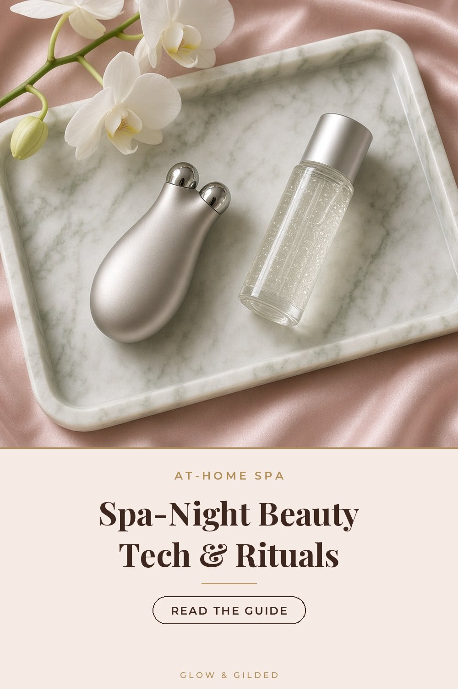

At-Home Spa
The At-Home Spa Night: Beauty Tech & Rituals Worth the Splurge
Disclosure: As an Amazon Associate we earn from qualifying purchases. Some links on this site are affiliate links, which means we may earn a commission at no extra cost to you.

A good facial is part technique, part atmosphere. You can recreate a surprising amount of both at home: dim lights, a warm cloth, a slow cleanse, and a little beauty tech. Here is our favorite 45-minute spa-night ritual and the well-reviewed tools that make it feel indulgent.
Set the scene (5 minutes)
Run a warm shower to steam the bathroom, light a candle, and put your phone on Do Not Disturb. Soak a small face cloth in warm water. The point is to signal to yourself that this is a pause, not another chore.
The ritual
ELEMIS Pro-Collagen Cleansing Balm
Step one is a slow, massaging cleanse. Take two full minutes, working the balm in small circles along the jaw, cheekbones and brow, then press the warm cloth over your face for a few breaths before wiping. This is the moment that feels most like a professional facial.
View on AmazonShark CryoGlow LED Face Mask
LED masks are the headline piece of at-home beauty tech. Shark's CryoGlow combines red, blue and infrared light with a cooling under-eye panel that feels wonderful after a long day. Use it on clean, dry skin and follow the manufacturer's session times and safety guidance. Results from LED build gradually with regular use over weeks, not in a single night.
View on AmazonELEMIS Pro-Collagen Night Cream
After your light session, seal everything in with a rich cream. Press it in with flat palms, then use your knuckles to sweep gently from the center of the face outward, like a facialist's lymphatic massage.
View on AmazonLANEIGE Lip Sleeping Mask (Berry)
Lips get a thick layer of mask while the rest of the ritual sinks in.
View on AmazonSlip Pure Silk Queen Pillowcase (Black)
End the night on silk. A silk pillowcase reduces friction on skin and hair while you sleep and keeps your night cream on your face, so it's the perfect final step of any spa night.
View on AmazonMake it a weekly habit
Choose one evening a week, like Sunday, and protect it. Over a month, the combination of thorough cleansing, regular LED sessions and better sleep on silk adds up to skin that looks rested, and you'll get four genuinely restful evenings out of it too.